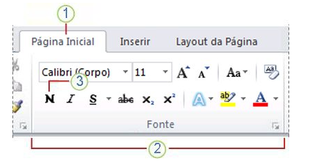
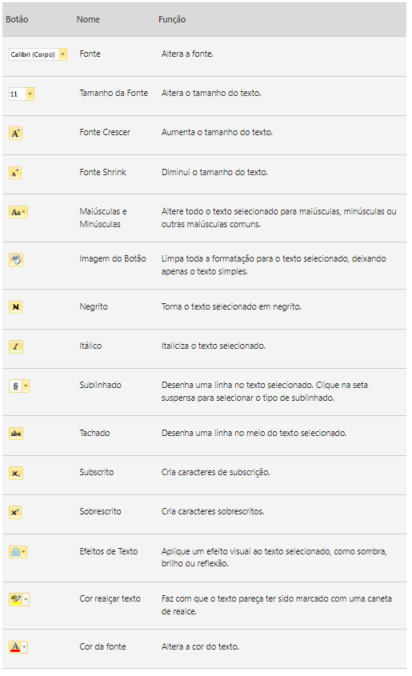

1- Barra de Título: Exibe o nome do arquivo do Documento que está editora e o nome do software que você usando. e também inclui os botões padrão Minimizar, restaurar e fechar.

2- Barra de Ferramentas de acesso rápido: comandos que são usados com frequencia, como salvar, Desfazer e Refazer.
3- Guia arquivo: Clique neste botão para encontrar comandos que atuam no próprio documento, em vez do conteúdo do documento, como Novo, Abrir, Salvar como, Imprimir e Fechar.
4- Faixa de Opções: Os comandos necessários para seu trabalho estão localizados aqui. Word compactará a faixa de opções alterando o arranjo dos controles para acomodar monitores menores.
5- Editar Janela: Mostrar o conteúdo do documento que você está editando.
6- Barra de Rolagem: Permite alterar a posição de exibição do documento que você está editando.
7- Barra de status: Exibe informações sobre o Documeno que você está editando.
8- Controle de slide do zoom: Permite alterar as configurações de zoom do documento que você está editando.
Antes de editar ou formatar texto, primeiro você deve selecionar o texto.
1- Esta é a guia Pagína Inicial.
2- Este é o grupo Fonte na Guia Pagina Inicial.
3- Este é o botão Negrito. Confira tabela abaixo para os nomes e funções de todos os botões no grupo fonte.
